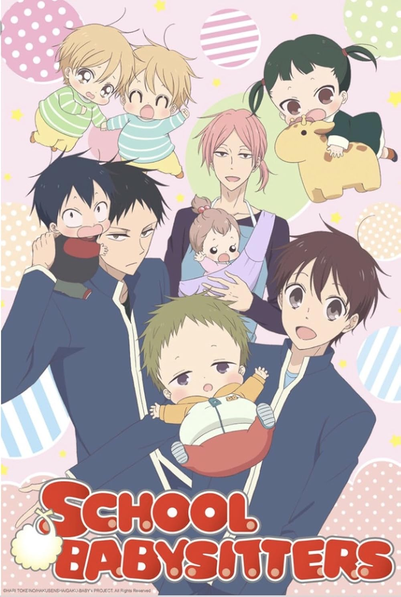

Gakuen Babysitters Watch Party!!
Haz click para unirte a la watch party
Tras perder a sus padres en un trágico accidente aéreo, el adolescente Ryuuichi Kashima debe adaptarse a su nueva vida como tutor de su hermano menor, Kotarou. Aunque Ryuuichi mantiene una actitud amable y bondadosa, Kotarou es un niño pequeño y reservado, demasiado pequeño para comprender la realidad de la situación. En el funeral de sus padres, Youko Morinomiya, la severa directora de una academia de élite, se acerca a ellos y decide acogerlos bajo su cuidado. Sin embargo, Ryuuichi debe cumplir una condición a cambio de un techo y la admisión en la escuela: debe convertirse en el niñero.

Opening
Ending
- Estrenado: Invierno 2018
- Estudio: Brain's Base
- Episodios: 12
- Duracion: 23 minutos por episodio
- Rating: PG-13
- Demografia: Shoujo
¡Obtén póster digital al registrarte!
- Watch Party Horario
- 6:30 PM EST
- 19 de Agosto 2026
- El evento durara 4 horas
¿Como me registro? Luego de dar click al boton "Unirme", solo debes ingresar tu nombre y un correo electrónico válido. En cuanto podamos te proporcionaremos un enlace para que te unas a la watch party, y adjuntado estará el link de descarga de tu póster digital, como agradecimiento por unirte a la fiesta. Esperamos te unas a pasar un momento divertido con nosotros.